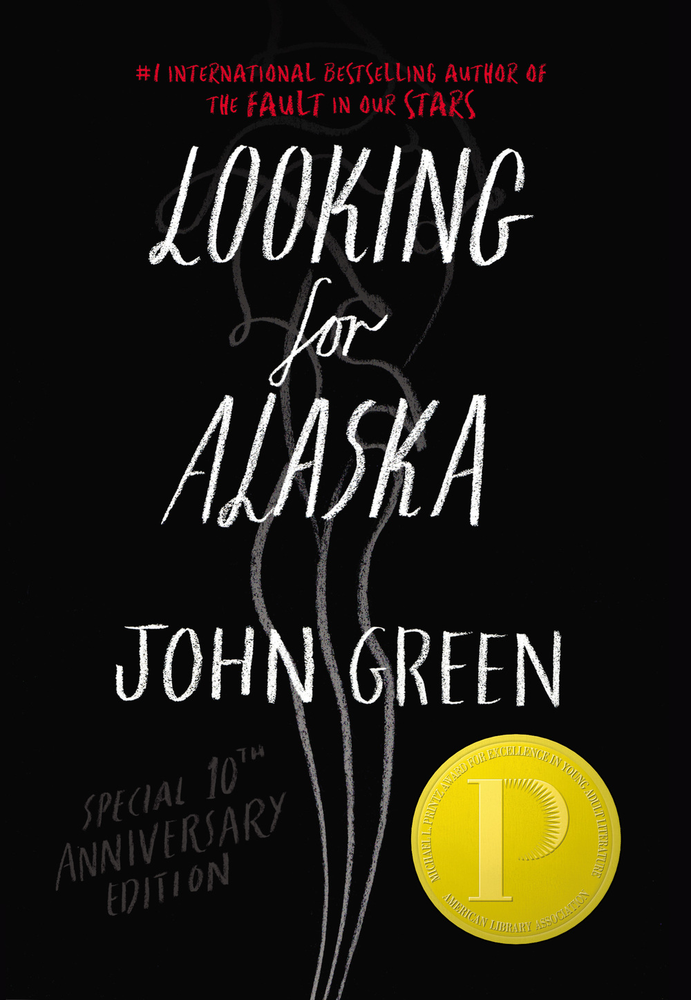
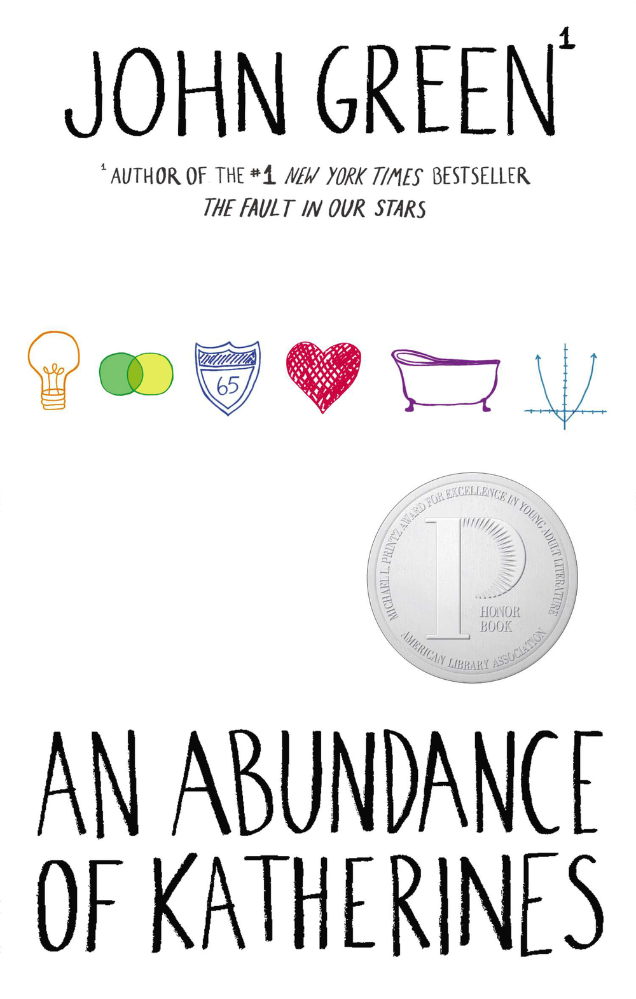

The first of many wonderful novels to come was Looking for Alaska, published in 2005. John was working at Booklist magazine during the day, and at night he would stay up till the early hours of dusk working on a manuscript, that eventually became Looking for Alaska. The novel is focused on the tale of a troubled teen who attends a boarding school. Said school is where Miles, the main protagonist, meets Alaska Young. Alaska is a deeply flawed, intelligent, and enigmatic girl. Miles cannot help but be drawn to her. Miles has a strange obsession with the last words of famous people and so does Alaska, to a lesser extent. When they first meet, she tells him the last words of “SimonBolivar”, “Damn it. How will I ever get out of this labyrinth!”. Then tragedy strikes and Miles is forced to discover the labyrinths within himself. .
Looking For Alaska Goodreads page An Abundance of Katherines is John’s second novel, published in 2006. The protagonist of the novel is a teenage boy named Colin Singleton, who has an IQ of 200. This child prodigy struggled his entire life with not having a “eureka” moment, and he spends the entire novel confronting that fear. The title of the novel comes from Colin’s dating history. He has 19 ex-girlfriends, and all of them are named Katherine. However, the last breakup with Katherine inspired Colin to take a road trip, in which he meets a girl named Lindsey. Lindsey endeavours to show Colin that mattering and being important is more than a “eureka” moment. This novel is deeply comforting, extremely relatable, and beautifully written.
An Abundance of Katherines Goodreads page Papertowns, published in 2008, is the second John Green novel to be adapted into a movie. The protagonist named Quentin Jacobsen is a very average boy, so to speak. His neighbour, however, isn’t. Margo Roth Spiegelman is the most popular and mysterious girl in school. She wears interesting t-shirts, has a scholarship to Dartmouth, and looks stunning without any makeup whatsoever. One night, Margo breaks into Quentin’s room, and they get to know each other on a level that wasn’t previously possible. She leaves the following morning. Quinten spends the entire novel attempting to find Margo Roth Spiegelman, and ultimately himself.
Papertowns Goodreads page
The Fault in Our Stars is undoubtedly the most popular John Green novel. It was published in 2012 and within the first week, The Fault in Our Stars sold more hardcovers than all three of his previous novels combined. It was also the first of his novels to be adapted into a movie. The film performed stunningly well at the box office. The actual novel itself is narrated by a 16-year-old girl, named Hazel Grace Lancaster (played by Shailene Woodly). Hazel has lung cancer and is thus forced to attend a support group. This is where she meets the gorgeous and brilliant Augustus Waters (played by Ansel Elgort). They soon fall in love and are forced to confront realities they cannot alter. The Fault in Our Stars will teach you a number of things about suffering and loss, as well as what it means to be human.
The Fault in Our Stars Goodreads page